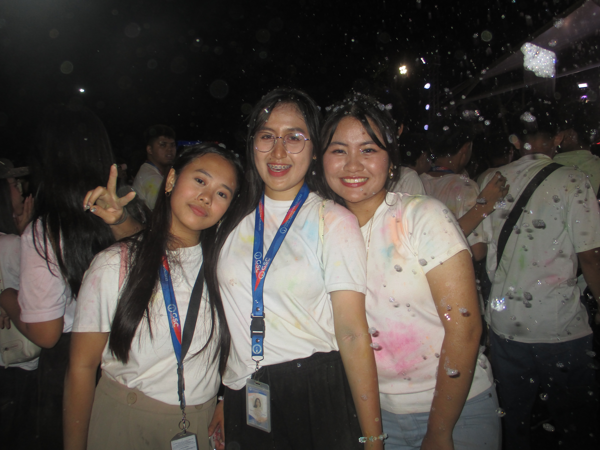
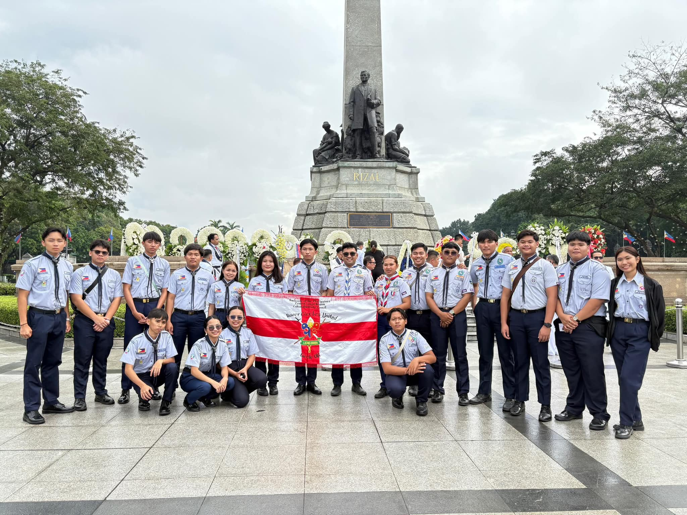
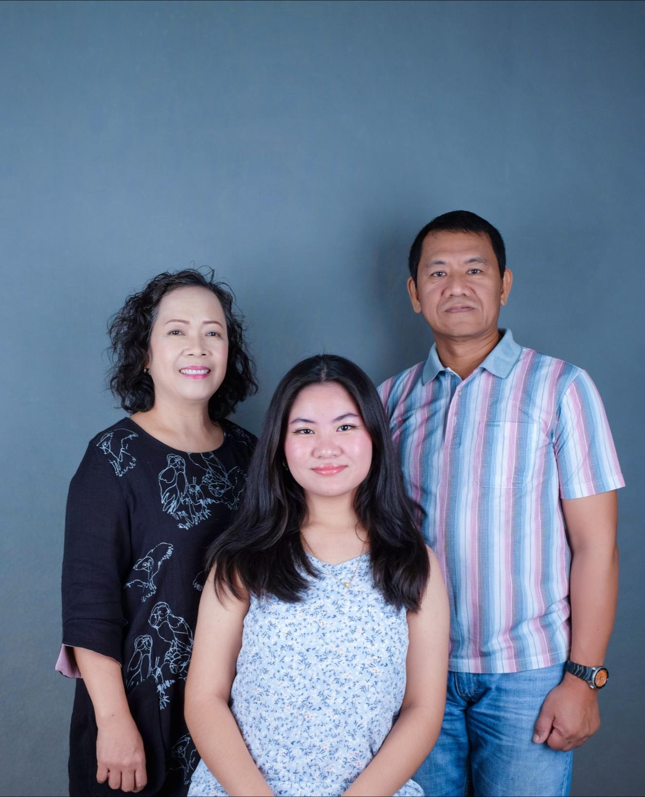
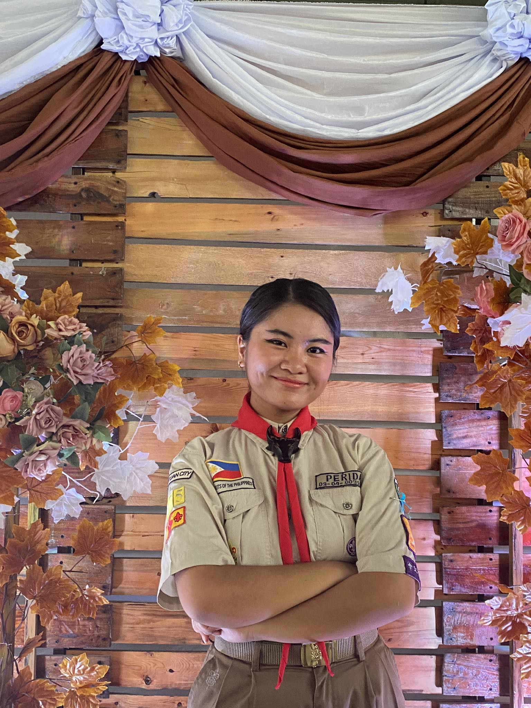
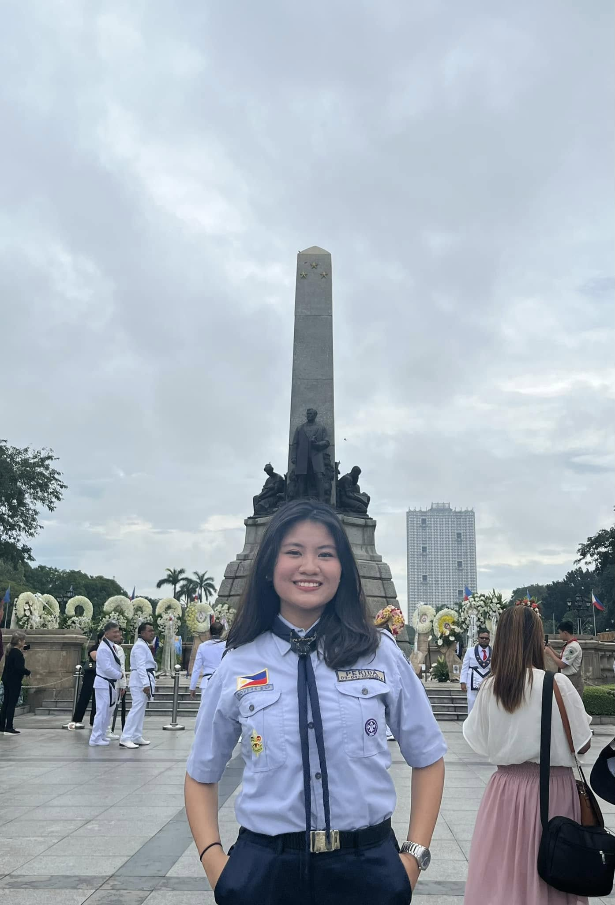
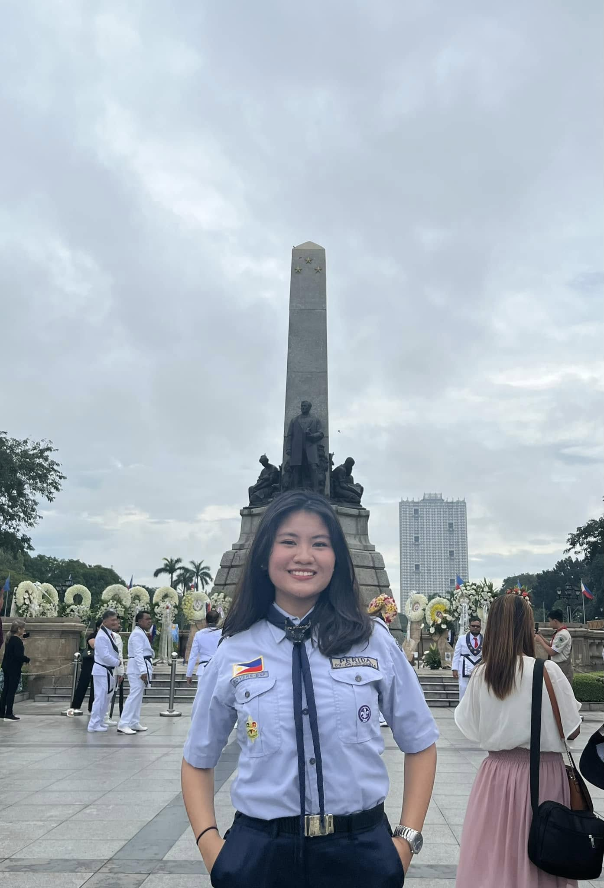
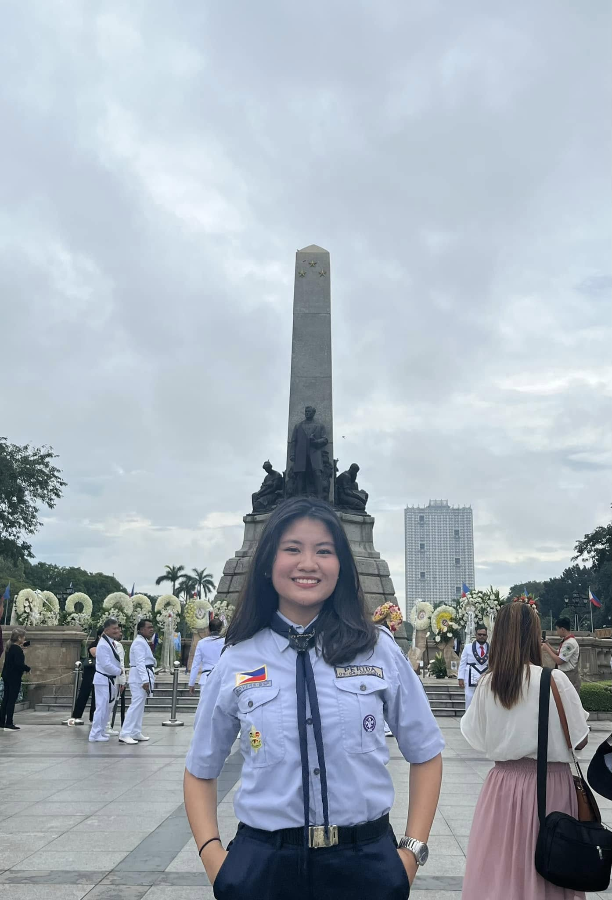
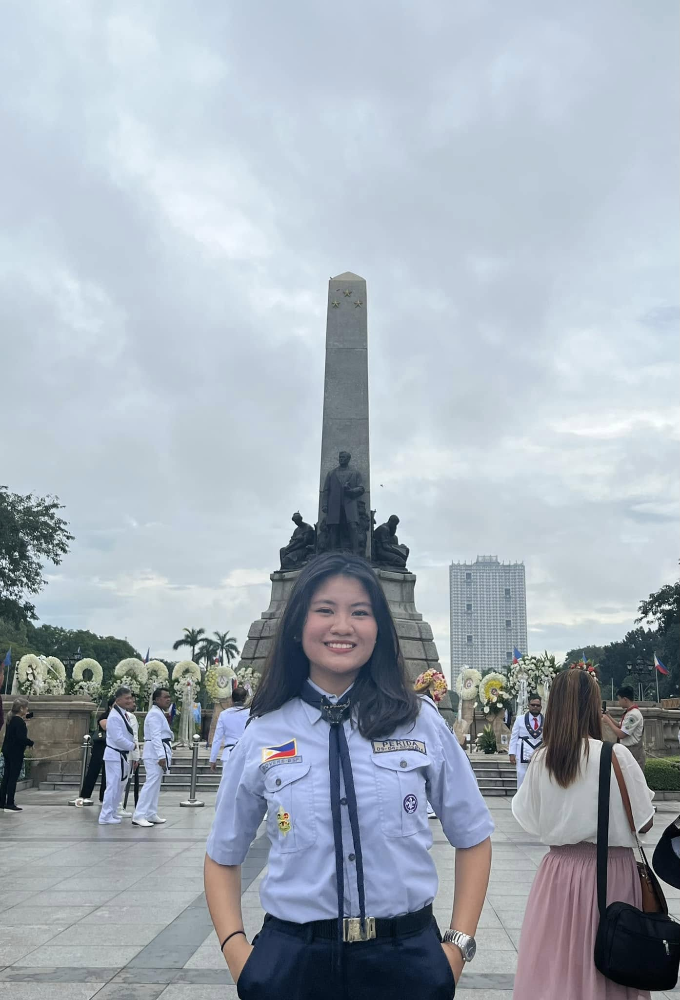

Photo Gallery




 


Hi! I'm Liana Perida, a 16-year-old born on December 25, 2008. I have a wide range of interests that keep me entertained and busy. I love watching K-dramas and anime, immersing myself in different worlds through mangas and novels, and, of course, spending time gaming. Some of my favorite games include Call of Duty, Resident Evil, Genshin Impact, Mobile Legends, Honkai: Star Rail, Left 4 Dead 2, Counter-Strike, and Valorant. While I enjoy gaming, I also do my best to balance it with my student responsibilities—though, if I’m being honest, procrastination is my best friend, and cramming comes in as a close second.
Beyond my digital hobbies, I enjoy spending quality time with my family. My day usually ends with me and my parents watching a movie together, as it’s the only bonding time we get. I also love animals, but unfortunately, I can’t have pets because of my asthma.
Aside from that, I’m an active member of the scouting movement as a Rover Scout, just like my two older brothers. Scouting has been a huge part of my life, teaching me values like leadership, camaraderie, and service. Thanks to scouting and our supportive parents, we’ve had the opportunity to travel to different places in and out of the country, meet scouts from other nations, interact with soldiers from the Armed Forces of the Philippines, connect with medical respondent teams from all over the country, and even encounter government officials, politicians, and the President of the Philippines. But beyond the places we've been to and the people we've met, scouting has given me a second family—a brotherhood bound by adventure, service, and lifelong friendships.
At the end of the day, I’m just someone who’s figuring things out, one quest at a time. Life may not come with a walkthrough, but as long as I have my family, friends, and a good internet connection, I think I’ll be just fine.

Let's be friends!
Email: lianaerinperida@goodsam.edu.ph
Facebook: Liana Perida
Instagram: @felilyyanna